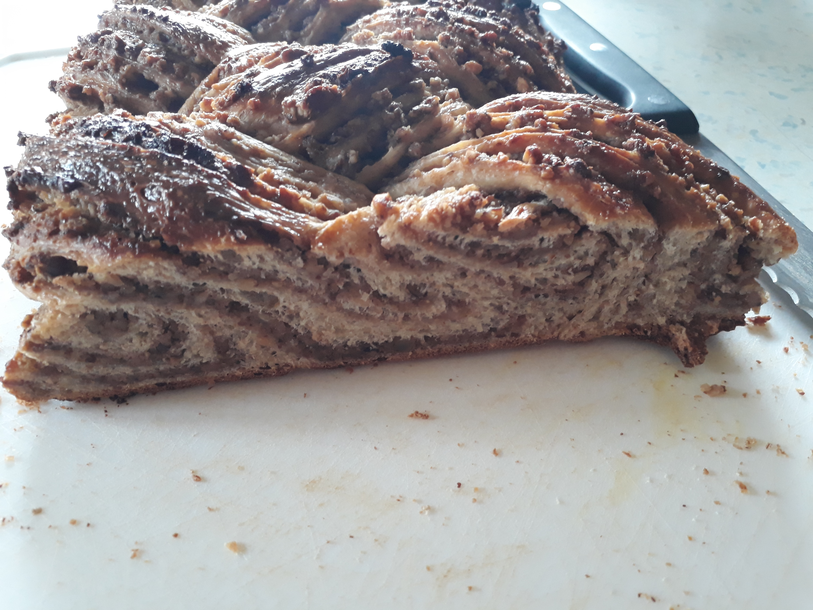

Zutaten
Mehlkochstück:
| 100 |
g |
(Pflanzen-)Milch |
| 25 |
g |
Mehl |
Hauptteig:
| 250 |
g |
Mehl (550) |
| 250 |
g |
Vollkornmehl |
| 30 |
g |
Zucker |
| 4 |
g |
Hefe |
| 9 |
g |
Salz |
| 280 |
g |
(Pflanzen-)Milch |
| 80 |
g |
Butter(-alternative) |
Füllung:
| 100 |
g |
Nüsse, gemahlen |
| 100 |
g |
Nüsse, gehackt |
| 50 |
g |
Semmelbrösel |
| 80 |
g |
brauner Zucker |
| 1 |
Prise |
Vanille |
| 250 |
ml |
(Pflanzen-)Milch |
| 2 |
EL |
Honig |
zum Bestreichen:
Anleitung
Teig:
- Für das Mehlkochstück, Mehl und Milch mischen und aufkochen lassen.
- Für den Hauptteig, alle trockenen Zutaten mischen.
- Hefe, Milch und Mehlkochstück dazugeben und 10min kneten.
- Butter nach und nach zum Teig geben und verkneten.
- Den Teig abgedeckt 4h gehen lassen.
Füllung:
- Nüsse in einer Pfanne leicht rösten.
- Restliche Zutaten dazugeben und etwas einkochen lassen.
- Den Teig halbieren und zu einem 40x20cm Rechteck ausrollen.
- Jeweils die Hälfte der Füllung auf dem Teig verteilen und von der langen Seite her aufrollen.
- Die Teigrollen längs durchschneiden und mit der Schnittseite nach oben zu einem Zopf flechten.
- 1h an einem warmen Ort oder über Nacht im Kühlschrank gehen lassen.
- Mit Milch bestreichen und 30min bei 200° backen.
- Noch warm nochmals mit Milch bestreichen.
Anmerkungen
- statt 550er Mehl kann man auch 240g 405er Mehl und 10g Glutenpulver nehmen
